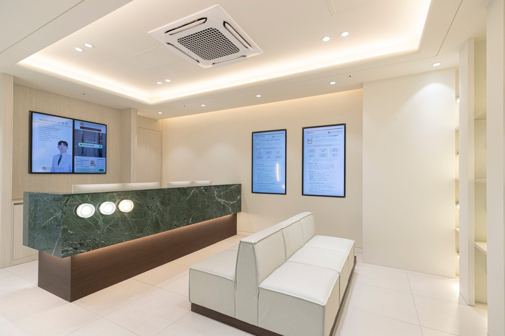
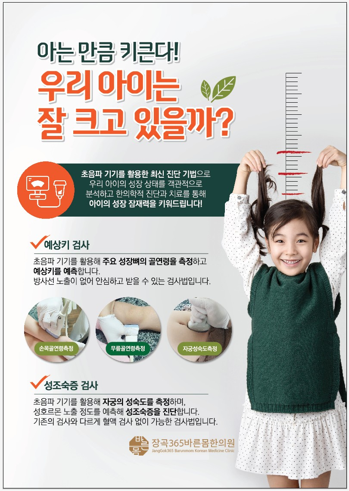

우리 아이는 잘 크고 있을까요?
초음파로 뼈 나이를 확인하고, 아이 상태에 맞춰 관리합니다.
CHECK
이런 분께 권합니다
- 또래보다 키가 작아 걱정되는 아이
- 입이 짧고 편식이 심한 아이
- 잠을 깊이 자지 못하는 아이
- 감기에 자주 걸리고 체력이 약한 아이
- 비염·아토피 등으로 컨디션이 자주 떨어지는 아이
- 성장기 건강 관리를 미리 시작하고 싶은 경우

ULTRASOUND CHECK
초음파 성장 검사
초음파 기기로 아이의 성장 상태를 확인하고, 한의학적 진단과 함께 치료 방향을 정합니다. 방사선 노출이 없어 아이도 부담 없이 검사받을 수 있습니다.
예상키 검사
초음파로 손목·무릎 등 주요 성장뼈의 골연령(뼈 나이)을 측정하고, 이를 바탕으로 예상키를 확인합니다.
성조숙증 검사
초음파로 자궁의 성숙도를 측정해 성조숙 여부를 살핍니다. 혈액 검사 없이 진행합니다.
TREATMENT
아이 상태에 맞춘 성장 치료
검사와 진찰 결과에 따라 필요한 치료를 골라 진행합니다.
성장추나
아이의 자세와 체형 균형을 살펴 바로잡는 추나 치료입니다.
성장침
아이에게 맞춘 부드러운 침 치료로 몸의 순환을 돕습니다.
성장한약
체질과 소화 기능, 컨디션을 살펴 아이에게 맞는 한약을 처방합니다.
수면·식습관·운동 등 집에서 지킬 수 있는 생활 관리법도 함께 안내합니다.
PROCESS
성장 클리닉 진료 과정
1
성장 상담
키·체중 변화와 생활습관을 여쭙니다
2
초음파 검사
골연령과 성장 상태를 확인합니다
3
결과 설명
검사 결과와 치료 계획을 설명드립니다
4
맞춤 치료
성장추나·성장침·성장한약을 진행합니다
5
정기 검사
변화를 확인하며 관리를 조정합니다
키 성장에는 유전, 영양, 수면, 운동 등 여러 요인이 함께 작용하며, 결과는 아이마다 다를 수 있습니다. 한약은 한의사의 진찰 후에 처방하며, 복용 중 불편한 증상이 있으면 바로 한의원으로 연락해 주세요.